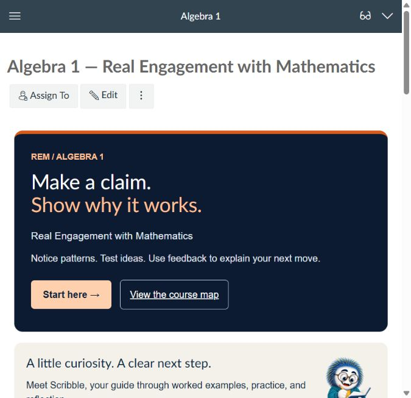

10 units · 40 core lessons
Expressions, equations, inequalities, functions, linear models, systems, exponential change, polynomials, quadratics, and data.
Real Engagement with Mathematics
Algebra 1 · Course design for Canvas LMS
A little curiosity. A clear next step. Explore a learning path where worked examples, practice, and feedback help learners make sense of the mathematics.
Published in Canvas Lite · Quiz scoring verified · Learner testing pending

Designed for learners beginning Algebra 1, typically grades 8–9, with prerequisite review guided by an eight-question readiness check.
Expressions, equations, inequalities, functions, linear models, systems, exponential change, polynomials, quadratics, and data.
120 practice questions and 40 misconception checks invite learners to attempt, compare, repair, and explain.
12 formative self-checks with 68 questions, plus 10 application assignments using a shared 12-point rubric.
A correct answer can hide weak reasoning. This course asks learners to justify transformations, check solutions against original conditions, and decide whether a model fits a situation.
A focused objective names the performance expected in the lesson.
A worked example explains the decisions behind the computation.
An incorrect claim gives learners a specific error to identify and correct.
Independent questions include explanations. Unit tasks require a model, mathematical work, verification, and contextual interpretation.

The course is configured in Canvas Lite with 12 ordered modules, 40 core lessons, 12 native practice quizzes containing 68 questions, and 10 application assignments. The branded home page is selected. Quiz scoring was checked in teacher preview, and application submission options were inspected. Rubrics are included in assignment descriptions; native SpeedGrader rubric associations are not configured.
The public preview lets visitors inspect the content without a Canvas login. It does not save submissions or grades. It is an independent preview of the content, separate from the live Canvas course. The Canvas course is published with public visibility. Canvas may require sign-in for quiz attempts and submissions.
The course includes a 36-week planning structure and selected Common Core connections. The 40 compact core lessons require additional teacher-led practice and local standards review for full-year classroom use. The next steps are a full Student View and accessibility review, followed by a learner pilot. No learner outcomes are claimed.